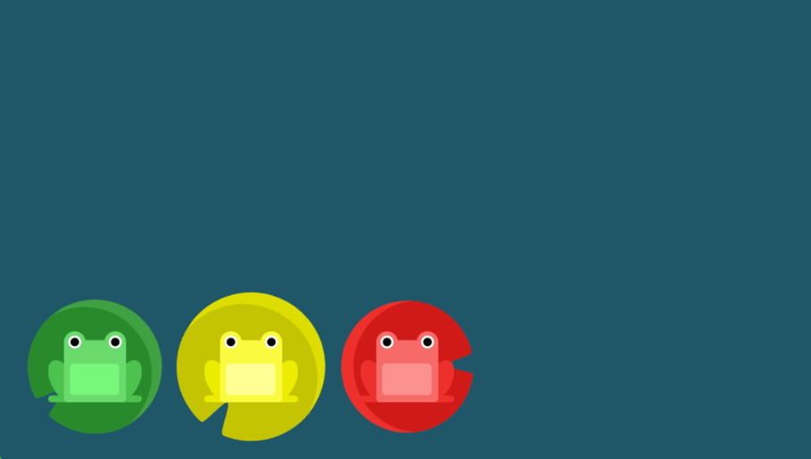
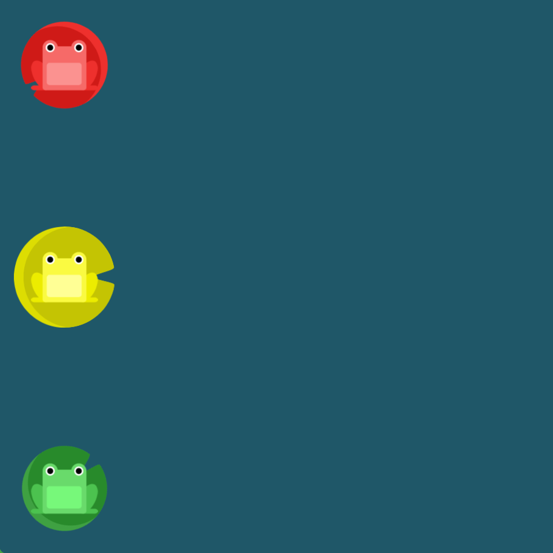
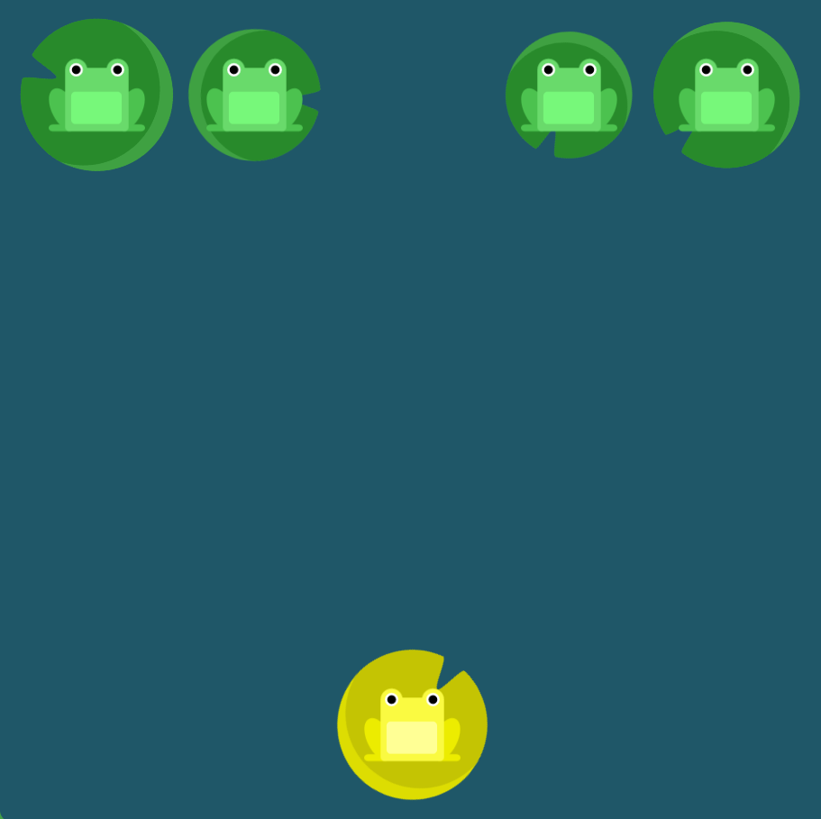
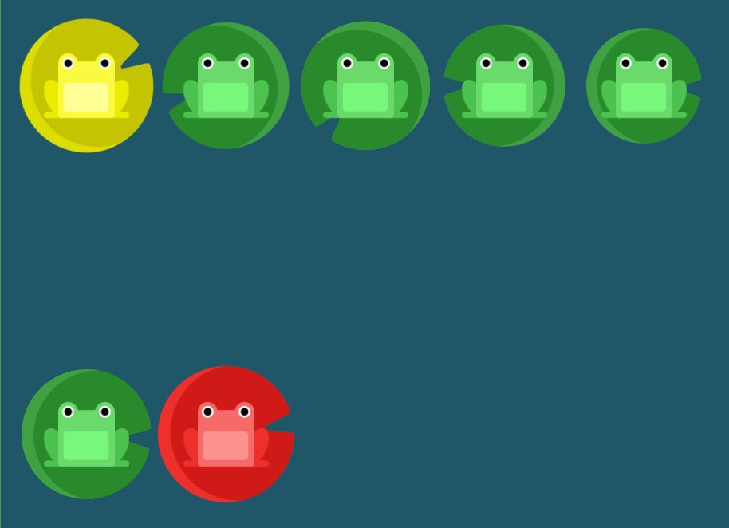
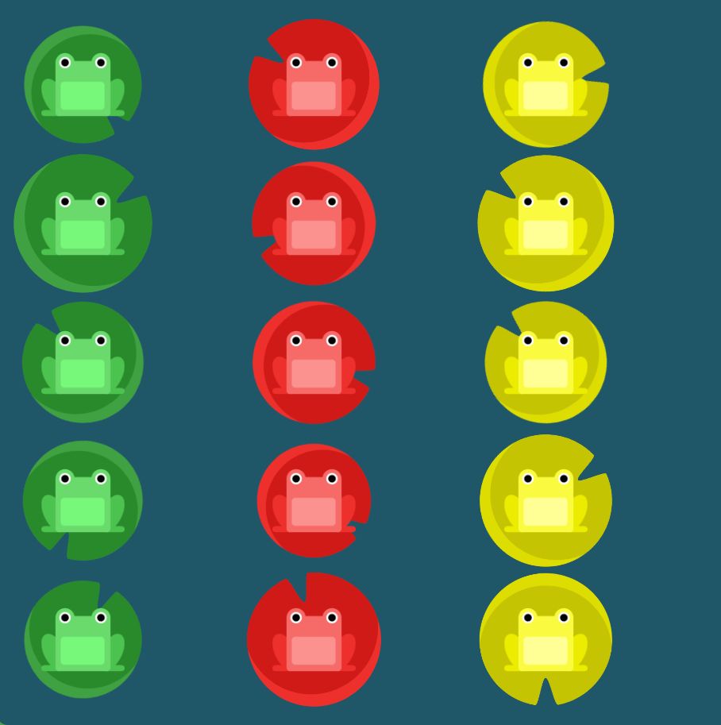

justify-content: center;
align-items: center;
flex-direction: column-reverse;
justify-content: space-between;

| Comando | Descripción | Foto | Nivel | Juego |
|---|---|---|---|---|
| justify-content: flex-end; | Mueve el contenido al final del contenedor |
|
1 | Flexbox Froggy |
| justify-content: center; | Mueve el contenido al centro del contenedor | 2 | Flexbox Froggy | |
| justify-content: space-around; | Hace un espacio equitativo en todo el contenedor | 3 | Flexbox Froggy | |
| justify-content: space-between; | Hace un espacio mínimo entre los bordes y el contenido almacenado en el medio contiene mayor espaciado entre ellos. | 4 | Flexbox Froggy | |
| align-items: flex-end; | Alinea el contenido al final del contenedor. |  | 5 | Flexbox Froggy |
|
justify-content: center; align-items: center; |
Alinea el contenido al medio de manera vertical y horizontal. | 6 | Flexbox Froggy | |
| flex-direction: row-reverse; | Alinea el contenido en formato fila y lo invierte, de esta manera la fila comienza por la derecha. | 8 | Flexbox Froggy | |
| flex-direction: column; | Alinea el contenido en formato columna. | 9 | Flexbox Froggy | |
|
flex-direction: column-reverse; justify-content: space-between; |
El contenido empieza desde el final y lo alinea con formato columna. Después se utiliza un space-between para dejar espacio entre ranas. |  | 12 | Flexbox Froggy |
| order: 1; | Cambia la posición. | 14 | Flexbox Froggy | |
| align-self: flex-end; | Alinea un solo contenido con las mismas reglas que align-items. |  | 16 | Flexbox Froggy |
| flex-wrap: wrap; | Ajusta todos los elementos a líneas adicionales. |  | 18 | Flexbox Froggy |
| flex-flow: column wrap; | Combina el "flex-direction" con el "flex-wrap". |  | 20 | Flexbox Froggy |
| justify-content: space-evenly; | Hace menos espaciado comparado con "space-between". |
|
5 | Adventure |